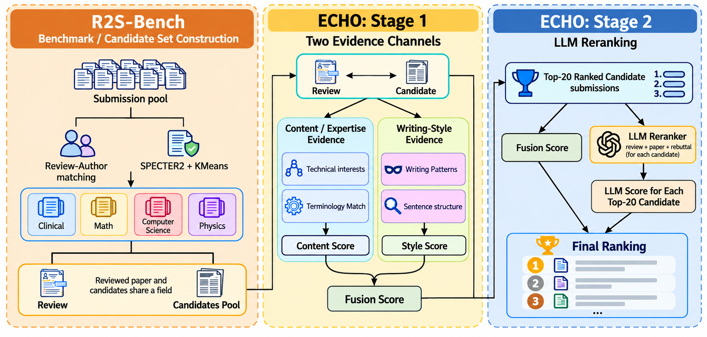

Reviewers at large venues are usually authors in the same cycle. That means an anonymous review coexists with two public texts written by the same person: their own submission and its rebuttal. We ask whether a review can be linked back to that submission using nothing but these routinely released artifacts.
It can. Among a median of 414 same-area candidate submissions, ECHO places the reviewer's own paper in the top 10 for 63.4% of reviews with a mid-tier LLM as reranker, and for 66.4% with a stronger one, against 5.3% by chance. No reviewer profile, no previously labelled reviews, and no platform metadata are involved. Each candidate is a single submission, so a successful link shrinks the reviewer's anonymity set to that paper's authors.

Why this is a new leak
Prior work de-anonymizes manuscripts from citations or style, or matches a review against the same reviewer's earlier reviews. Both need identity-linked history. Review-to-submission linkage needs none: the reviewed paper, the review, the candidate submissions and their rebuttals are all released by the venue itself. The ICLR 2026 OpenReview incident showed what happens when reviewer identities leak through a platform bug. This work shows that a sizeable part of that anonymity can be lost even when the platform leaks nothing.
R2S-Bench
Double-blind venues never expose the ground truth, so we build it from the F1000 open-research platform, where reviews are publicly signed and articles carry author responses. From 11 journals (12,466 articles, 37,673 reviews, 13,117 rebuttals) we identify 2,727 reviewer-authors by ORCID or conservative name-and-affiliation matching, group articles into eight research areas with SPECTER2 embeddings, and build for each review a candidate set of same-area submissions that were public at review time. Signatures are used only for ground truth and are stripped from every input, together with names, affiliations, e-mail addresses, profile links and platform templates.
The benchmark has 298 instances from 256 reviewer-authors. Each instance is one sanitized review, a candidate set (17 to 1,181 submissions, median 414) and one gold submission. Every candidate is represented by its title and abstract and by its rebuttal; for the gold candidate the rebuttal is the one the reviewer wrote. Article ids are salted hashes and reviewers are pseudonymous.
ECHO
Stage 1, two evidence channels. A content channel compares the review with the candidate paper and rebuttal through chunked dense similarity from six encoder configurations, BM25 and character n-grams. A writing-style channel compares the review with the rebuttal after deterministic content masking removes nouns, proper nouns, adjectives, numbers and rare verbs, leaving function words, hedges, punctuation and sentence shape for 122 handcrafted stylometric features; the STAR authorship encoder adds one more signal. All 46 signals are standardized within the candidate set and fused by a conditional logit fitted with reviewer-grouped cross-validation.
Stage 2, LLM reranking. For each of the fusion top-20, an LLM reads the review, the candidate's abstract and its rebuttal and returns a 0 to 100 score for same authorship. The score is standardized over the shortlist and averaged with the fusion score. The reviewed paper itself is never shown to the model.
Main results
298 instances, median 414 candidates. Top-k is the share of instances whose true submission is ranked within the first k. Time is wall-clock for the whole benchmark; Cost is API spend.
| Method | Top-1 | Top-5 | Top-10 | Top-20 | Time | Cost |
|---|---|---|---|---|---|---|
| Random | 0.5% | 2.6% | 5.3% | 10.5% | – | – |
| Open-source LLM scoring every candidate (Qwen3-32B) | 7.0% | 14.4% | 21.1% | 31.5% | 14.5 h | – |
| Closed-source LLM scoring every candidate (GPT-6 Luna) | 18.5% | 35.6% | 44.6% | 54.7% | 4.5 h | $40.9 |
| ECHO (GPT-6 Luna reranker) | 34.6% | 54.0% | 63.4% | 67.4% | 2.5 h | $2.74 |
| ECHO (Claude Opus 5.5 reranker)† | 44.3% | 60.4% | 64.8% | 67.4% | 3.7 h | $81 |
| ECHO (GPT-6 Astra reranker) | 56.4% | 65.4% | 66.4% | 67.4% | 2.4 h | $143 |
†Claude Opus 5.5 declined 9.2% of the pairwise judgements on safety grounds; declined judgements are scored as neutral. Scoring every candidate with the same LLM is both worse and far more expensive than first exploiting content and style evidence and reranking a short list. Top-20 is bounded by the Stage-1 recall of 67.4%.
What each part contributes
| Variant | Top-1 | Top-5 | Top-10 |
|---|---|---|---|
| Fusion only, no reranking | 26.5% | 47.0% | 58.7% |
| LLM only on the fusion top-20 | 24.8% | 51.7% | 62.4% |
| Paper only | 30.5% | 49.0% | 54.7% |
| Rebuttal only | 30.9% | 52.7% | 59.7% |
| Content evidence only | 28.9% | 52.0% | 59.4% |
| Writing-style evidence only | 24.8% | 42.3% | 48.3% |
| Full ECHO | 34.6% | 54.0% | 63.4% |
Does AI rewriting the review help?
| Review | Top-1 | Top-10 | content bits | style bits |
|---|---|---|---|---|
| Original | 34.6% | 63.4% | 1.12 | 0.43 |
| Light rewrite (grammar, clarity) | 22.1% | 56.7% | 1.12 | 0.37 |
| Heavy rewrite (neutral academic English) | 20.5% | 49.7% | 1.09 | 0.17 |
Rewriting erases most of the style signal (0.43 to 0.17 bits of information about the true candidate) but leaves the content signal intact. The attack weakens; it does not go away.
What this means for venues
Anonymity has to be assessed across the set of artifacts a venue releases, not document by document. Three things follow from the results. Expertise, not style, carries most of the leak, so style-obfuscation tools are not a fix. Rebuttals are the richest single artifact, because they are long, technical and written by the same hands as the review. And the cost of the attack is a few dollars, so the question is not whether it is feasible but when reviews, submissions and rebuttals should become visible relative to one another.
Our threat model covers systems where reviews and candidate submissions are public while reviewing is ongoing. Venues that hold either back until after the decision are outside its scope. Full limitations and the ethics statement are in the paper.
Resources
The repository contains the benchmark (298 instances, 5,061 distinct candidate submissions), the method and evaluation code organised by module, and the pipeline that built the benchmark from PubMed Central. Benchmark texts are redistributed under the F1000 platform's CC BY 4.0 licence; the code is MIT.
Citation
@article{wang2026echo,
title = {ECHO: Revealing Review-to-Submission Linkage in Anonymous Peer Review},
author = {Wang, Rong and Luo, Mulong},
journal = {arXiv preprint arXiv:2610.27044},
year = {2026},
url = {https://arxiv.org/abs/2610.27044}
}